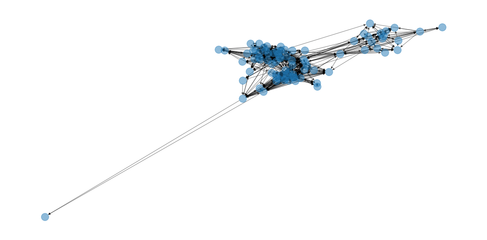
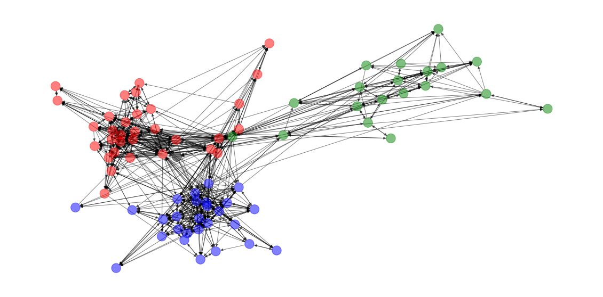
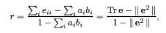

Assortativity
When examining the nature of your network’s arrangement, the concept of assortativity is a complicated, albeit deeply-intuitive one. You can think of it as the network analog to a correlation or coincidence score– it’s bounded between [-1, 1] and represents how much nodes in the network have self-arranged with other nodes that look like it.
Data
To dive into this concept, I’ll borrow a dataset representing faculty relationships at a university, keyed by the department they work in (group for each node).
(Link)
%pylab inline
import networkx as nx
G = nx.read_graphml('data/univ_dataset_TSPE.graphml')Populating the interactive namespace from numpy and matplotlib
# simple helper function
pos = None
def draw(G, new_pos=False, colors=None):
global pos
if (pos is None) or new_pos:
pos = nx.spring_layout(G)
fig, ax = plt.subplots(figsize=(20, 10))
nx.draw(G, alpha=.5, pos=pos, node_color=colors)Inexplicably, every time I run it, there’s this wild outlier
draw(G)
so I’m going to drop it for the sake of visual clarity.
G.remove_node('n10')Much better!
Now to the matter at hand. How much did this network self-organize by the node attribute group?
group_dict = {idx: node['group'] for idx, node in G.nodes(data=True)}
color_dict = {0.0: 'red',
1.0: 'blue',
2.0: 'green',
3.0: 'black'}
colors = [color_dict[group] for group in group_dict.values()]A fair amount, it seems
draw(G, new_pos=True, colors=colors)
In fact, the assortativity coefficient is actually quite high.
nx.attribute_assortativity_coefficient(G, 'group')0.7048747599784635
… but how did we arrive at it?
Constituent Parts
Before we walk through the underlying networkx code, I want to share the key formula from the seminal paper on the topic.
The following equation gives us the assortativity coefficient, r. Here, we’re only considering the discrete case (continuous in a few)– the paper that introduces the concept starts by encoding a categorical variable to numeric and going from there.
from IPython.display import Image
Image('images/assortativity.png')
Let’s break this down a bit, using the table they provided at the beginning
rrepresents the assortativity coefficienteis the “fraction of edges in a network that connect a vertex of typeito typej”. This is essentially a co-incidence matrix, normalized by the number of values, therefore the value ofesum to 1.
e = np.array([[.258, .016, .035, .013],
[.012, .157, .058, .019],
[.013, .023, .306, .035],
[.005, .007, .024, .016]])
sum(e)0.9969999999999999
- For a given node,
i, theaandbterms are the fraction of that node’s in/outbound edges that connect to the various other classes. In an undirected graph, these are equivalent.
a = np.sum(e, axis=1)
b = np.sum(e, axis=0)
display(a)
display(b)array([0.322, 0.246, 0.377, 0.052])
array([0.288, 0.203, 0.423, 0.083])
Tris a Linear Algebra operation where you sum the values along the diag. So in the right-hand chunk, summingedown the diag means summing the total proportion of edges in the network that map from same-type to same-type nodes.
tr_e = np.trace(e)
tr_e0.7370000000000001
- The double-bar
e**2term is a bit dense. Double-bar in this context means “the sum of all elements in the matrix”, that’s easy enough. Otherwise, you should recognize that squaring the matrixeand taking the sum ofa * bfor all values ofiare literally the same thing– just consolidates it all into one step.
Stare at this until you believe that.
np.sum(a * b)0.30646100000000004
e_squared_barbar = np.sum(e @ e)
e_squared_barbar0.306461
Putting it altogether, we get
(
(tr_e - e_squared_barbar)
/
(1 - e_squared_barbar)
)0.6207855650511365
which is consistent with the value reported in the paper.
Image('images/assortativity.png')
In networkx
Getting back to it, let’s see how this is all stitched together under the hood.
node_attribute_xy
In the example above, we started with our matrix, e– the proportional coincidence matrix. So before we can really get going, we have to start there.
The nx.node_attribute_xy() function is an awesome generator that looks at every edge to serve up the attribute tuple for each connected pair
xy = list(nx.node_attribute_xy(G, attribute='group'))
list(
(a, b)
for (a, b) in xy
if a != b
)[:10][(1.0, 0.0),
(1.0, 0.0),
(1.0, 0.0),
(1.0, 2.0),
(1.0, 2.0),
(1.0, 2.0),
(1.0, 3.0),
(1.0, 0.0),
(1.0, 0.0),
(1.0, 3.0)]
mixing_dict
Next, we pipe that list of tuples into nx.mixing_dict() to get a nested-dict representation of our matrix e
nx.mixing_dict(xy){2.0: {2.0: 96, 0.0: 21, 1.0: 13, 3.0: 2},
0.0: {0.0: 315, 1.0: 41, 3.0: 14, 2.0: 13},
1.0: {0.0: 24, 1.0: 250, 2.0: 6, 3.0: 2},
3.0: {0.0: 11, 3.0: 2, 2.0: 2, 1.0: 3}}
Alternatively, we could just use the following function that combines the last two steps
mixing_dict = nx.attribute_mixing_dict(G, 'group')mixing_matrix
Finally, we build our e matrix from the mixing dict, calculated above.
manual = np.zeros((4, 4))
for i, row in enumerate(sorted(mixing_dict)):
for j, col in enumerate(sorted(mixing_dict[row])):
manual[i][j] = mixing_dict[row][col]
manualarray([[315., 41., 13., 14.],
[ 24., 250., 6., 2.],
[ 21., 13., 96., 2.],
[ 11., 3., 2., 2.]])
Of course, there’s a simple helper method that does this for us.
We can either get this as raw counts
mix_mat_raw = nx.attribute_mixing_matrix(G, 'group', normalized=False)
mix_mat_rawarray([[315., 41., 13., 14.],
[ 24., 250., 6., 2.],
[ 21., 13., 96., 2.],
[ 11., 3., 2., 2.]])
Or normalize the whole thing to sum to 1 (which is a necessary characteristic of e)
mix_mat_raw / mix_mat_raw.sum()array([[0.38650307, 0.05030675, 0.01595092, 0.01717791],
[0.02944785, 0.30674847, 0.00736196, 0.00245399],
[0.02576687, 0.01595092, 0.11779141, 0.00245399],
[0.01349693, 0.00368098, 0.00245399, 0.00245399]])
mix_mat = nx.attribute_mixing_matrix(G, 'group')
mix_matarray([[0.38650307, 0.05030675, 0.01595092, 0.01717791],
[0.02944785, 0.30674847, 0.00736196, 0.00245399],
[0.02576687, 0.01595092, 0.11779141, 0.00245399],
[0.01349693, 0.00368098, 0.00245399, 0.00245399]])
Finally, we plug-and-chug as above and see a considerable assortativity by group– which mirrors our visual intuition nicely
tr_e = mix_mat.trace()
e_squared_barbar = np.sum(mix_mat @ mix_mat)
(
(tr_e - e_squared_barbar)
/
(1 - e_squared_barbar)
)0.7048747599784635
In the likely event that you don’t want to do this all by hand, there’s absolutely a function that handles this all in a flash.
nx.attribute_assortativity_coefficient(G, 'group')0.7048747599784635
Continuous Analog
Although the actual math is different, it’s possible to run the same function to apply the same general method on arbitrary continuous data.
To demonstrate, let’s build a trivial variable, based on the id value that a node gets instantiated with.
list((
data
for node, data
in G.nodes(data=True)
))[:5][{'group': 2.0, 'id': 'n0'},
{'group': 0.0, 'id': 'n1'},
{'group': 2.0, 'id': 'n2'},
{'group': 2.0, 'id': 'n3'},
{'group': 1.0, 'id': 'n4'}]
Literally, just stripping off the leading n and casting as an int
node_ids = {node: int(data['id'][1:])
for node, data
in G.nodes(data=True)}
nx.set_node_attributes(G, values=node_ids, name='node_id')
list((
data
for node, data
in G.nodes(data=True)
))[:5][{'group': 2.0, 'id': 'n0', 'node_id': 0},
{'group': 0.0, 'id': 'n1', 'node_id': 1},
{'group': 2.0, 'id': 'n2', 'node_id': 2},
{'group': 2.0, 'id': 'n3', 'node_id': 3},
{'group': 1.0, 'id': 'n4', 'node_id': 4}]
And so running the equation over our node_id values, we get a value that’s very close to 0, suggesting that there is NO assortativity, with respect to node_id.
Put another way, this suggests that the nodes were introduced to the network in a random fashion– as we showed above there is clearly assortativity by group. So if nodes were added one group at a time, it follows that there would be a high degree of intra-group correlation. Summing that over the network, we’d expect to see something positive but small, probably in the .2-.4 range.
nx.attribute_assortativity_coefficient(G, 'node_id')-0.015185949939552698
Degree Assortativity
Finally, we can peek at one of the more popular measures in this space and see how degree assortative our data is.
Do high-degree nodes disproportionately seek out other high degree nodes? Think about it: how often do celebrities marry total nobodies, vs other “nodes” with comparable star power?
To start, we’ll tack on a raw degree attribute and calculate the way we know how.
degrees = {node: degree
for node, degree
in G.degree}
nx.set_node_attributes(G, values=degrees, name='degree')
list((
data
for node, data
in G.nodes(data=True)
))[:5][{'group': 2.0, 'id': 'n0', 'node_id': 0, 'degree': 15},
{'group': 0.0, 'id': 'n1', 'node_id': 1, 'degree': 36},
{'group': 2.0, 'id': 'n2', 'node_id': 2, 'degree': 8},
{'group': 2.0, 'id': 'n3', 'node_id': 3, 'degree': 18},
{'group': 1.0, 'id': 'n4', 'node_id': 4, 'degree': 38}]
Looks pretty random to me.
nx.attribute_assortativity_coefficient(G, 'degree')-0.0015635016182241753
Checking against the native function, I was surprised by how much I was off
nx.degree_assortativity_coefficient(G)0.0356095440281665
Until I realized that this particular network is a directed graph
type(G)networkx.classes.digraph.DiGraph
And that there’s an additional wrinkle you have to keep straight when rewriting the equation for r to consider in-degree vs out-degree separately. I’ll omit the particulars for now, but if it turns out that this is crucial to understand, I’ll come back and elaborate.
Casting G as an undirected graph for a sec, this is MUCH closer to what we did more manually :)
nx.degree_assortativity_coefficient(nx.Graph(G))-0.004034673332927811